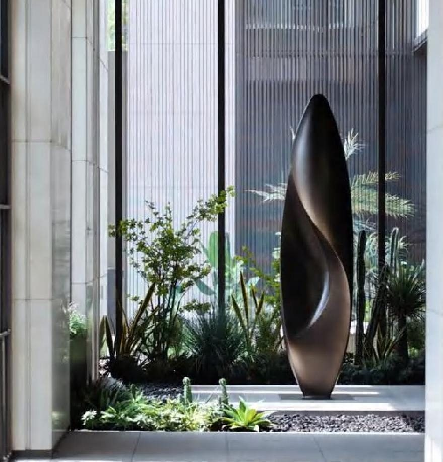

Sculptural Systems · Journal
Sculpture as
Architecture
When a sculpture is built to the scale of a building, it stops being decoration and becomes a landmark — the first thing a place is remembered by.
When a sculpture is built to the scale of a building, it stops being decoration and becomes a landmark — the first thing a place is remembered by.
Decoration sits in a room. A landmark gives the room its reason to exist. The line between the two is scale, ambition, and the courage to let one gesture dominate.
TSK designs sculpture at the scale of architecture — pieces conceived not to fill a corner but to anchor a building, a forecourt, a skyline. At that size a sculpture becomes infrastructure for emotion: the thing people gather beneath, photograph, and navigate by.
Working at monumental scale changes everything. Wind, weight, foundation, span and how a form reads from two hundred metres all become design drivers. Our sculptural systems begin as architecture and are finished as art — structurally honest, yet weightless to the eye.

The most valuable real estate in any development is the first impression. A monumental work in a lobby or plaza does the work of a thousand brochures — it tells everyone who enters that they have arrived somewhere singular. It is identity made physical.
People do not remember rooms. They remember the one thing in the room they could not look away from.
Permanence is a promise. Every monumental commission is engineered for decades of weather, movement and maintenance, so the piece looks on its hundredth day exactly as it did on its first. See how this thinking extends overhead in our architectural ceilings, or begin with the work we have installed.
— The Atelier, The Stellar Kraft
From lobby centrepieces to civic-scale public art, we design and engineer sculpture that defines the spaces it stands in.
Begin a Commission →